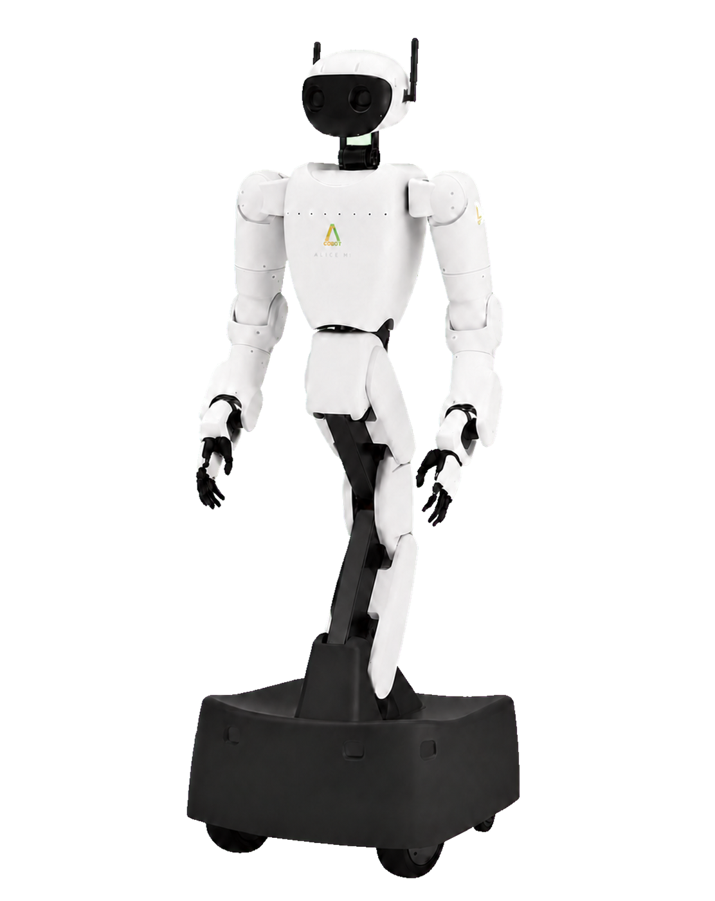

모방학습
- 전문가 시연을 그대로 모사한다.
- 양질의 시연 데이터가 많을수록 유리하다.
LECTURE 04
자연어 명령을 행동으로 변환하는 모델

QUESTION
CONCEPT
인식과 해석 결과가 행동 출력으로 이어진다.
CONCEPT
COMPARE
QUESTION
CONCEPT
하나의 에피소드에 관측과 행동이 시계열로 기록된다.
BUILD
BUILD
관절 값과 영상은 같은 시각에 맞춰야 한다.
BUILD
CONCEPT
학습 데이터는 실패 사례와 환경 다양성을 포함해야 한다.
CONCEPT
CONCEPT
모델이 출력한 관절 목표를 제어기가 구동 신호로 변환한다.
CONCEPT